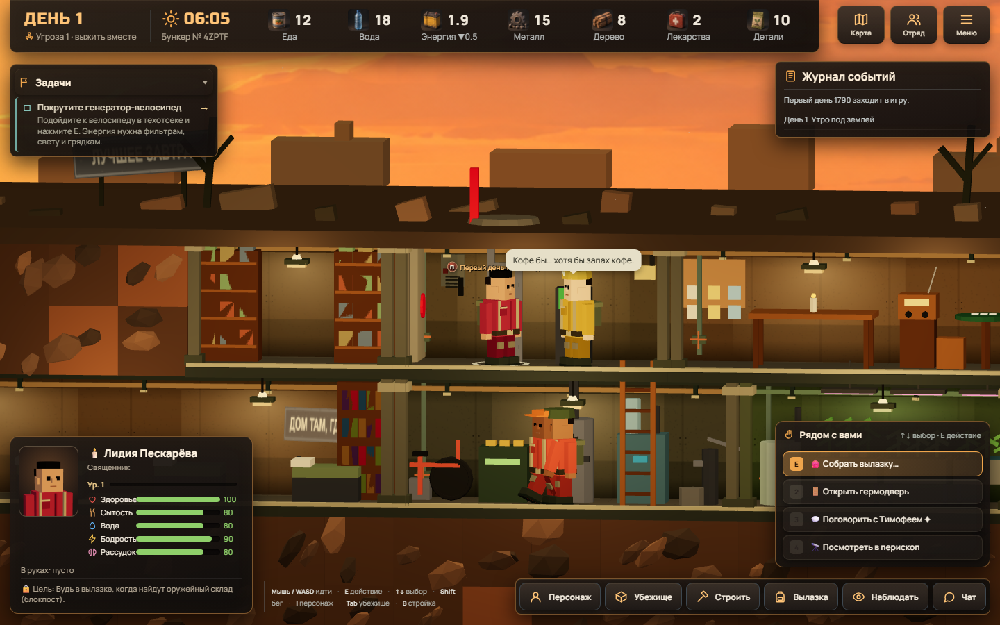
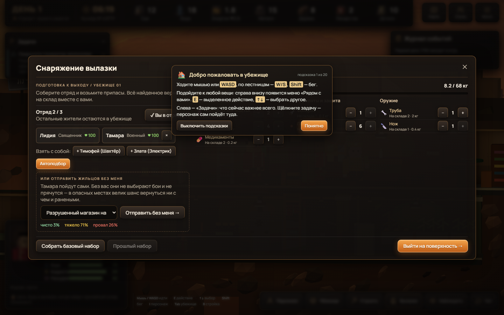
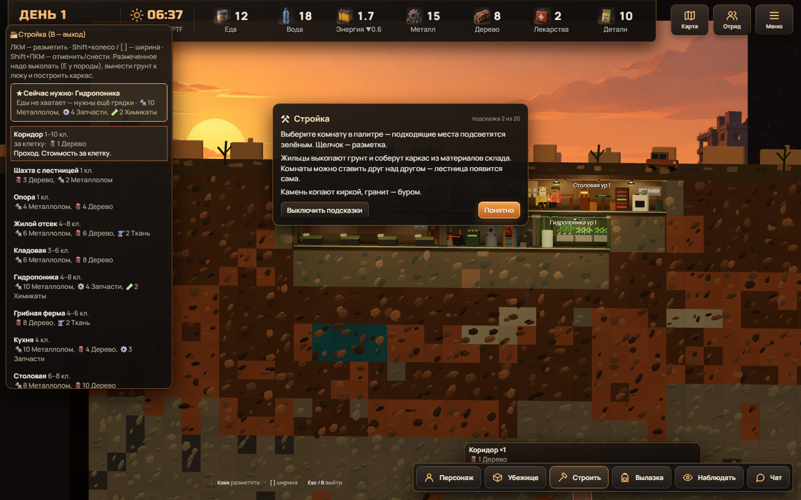

01 / УБЕЖИЩЕ
Поддерживайте жизнь
Жильцы тратят еду и воду каждый день. Электричество питает фильтры и грядки. Начните с генератора.
⚡ Первое дело: дать ток
Три решения, с которых начнётся ваша история.

Жильцы тратят еду и воду каждый день. Электричество питает фильтры и грядки. Начните с генератора.

Отправьте отряд к магазину или ферме. Добыча пополнит склад, но снаружи можно получить раны и погибнуть.

Гидропоника выращивает еду. Насос и фильтр дают чистую воду. Без запасов жильцы ослабеют и могут умереть.